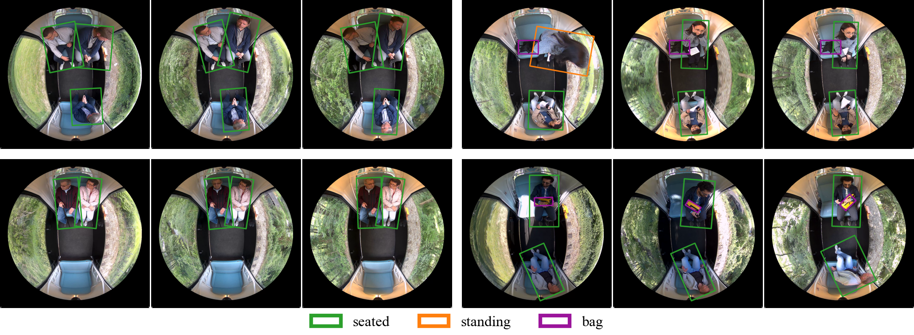
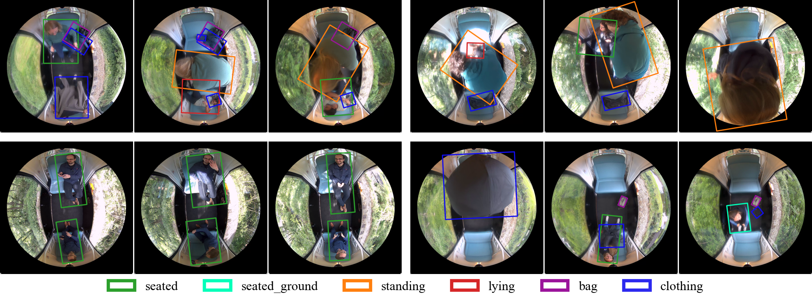

PMOF: A Dataset and Benchmark for Passenger Monitoring Using Overhead Fisheye Cameras
The PMOF dataset is published under a Creative Commons Attribution-NonCommercial 4.0 International License.
To obtain access to the dataset, please contact: stella.wermuth@hsbi.deAbstract
Autonomous staff-free public transport requires reliable in-vehicle passenger monitoring. However, perception inside moving vehicles is challenged by confined spaces, variable illumination, motion-induced background variation, occlusion, and limited viewpoints. To mitigate these spatial constraints, ceiling-mounted fisheye cameras provide full-scene coverage from a single viewpoint. Yet existing public overhead fisheye datasets are recorded in static environments and do not capture the domain shift introduced by vehicle motion. To fill this gap, we introduce PMOF, Passenger Monitoring using Overhead Fisheye cameras, the first public dataset of top-view fisheye imagery captured inside a moving vehicle, comprising over 19k manually annotated frames. PMOF provides rotated bounding boxes, tracking identifiers, and action labels, supporting object detection, tracking, and action recognition. We benchmark PMOF using YOLO26m-obb models fine-tuned under multiple dataset configurations that combine PMOF with existing overhead fisheye datasets. Cross-domain fine-tuning with custom rotation-aware augmentation achieves 94.8% AP50 on PMOF and 96.5% AP50 on an unseen overhead fisheye dataset from a different domain. Our results highlight the domain gap between static and moving environments and show that incorporating PMOF improves detection performance and advances generalization beyond passenger monitoring to broader fisheye-based person detection tasks.

Example frames from training subset.

Example frames from validation subset.
BibTeX
@article{wermuth_pmof_2026,
title={PMOF: A Dataset and Benchmark for Passenger Monitoring Using Overhead Fisheye Cameras},
author={Wermuth, Stella Katharina and Ahmed, Qazi Arbab and Neumann, Klaus and Jungeblut, Throsten},
journal={tba},
year={2026},
url={tba}
}